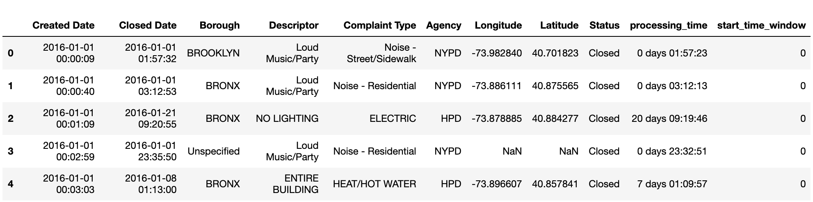
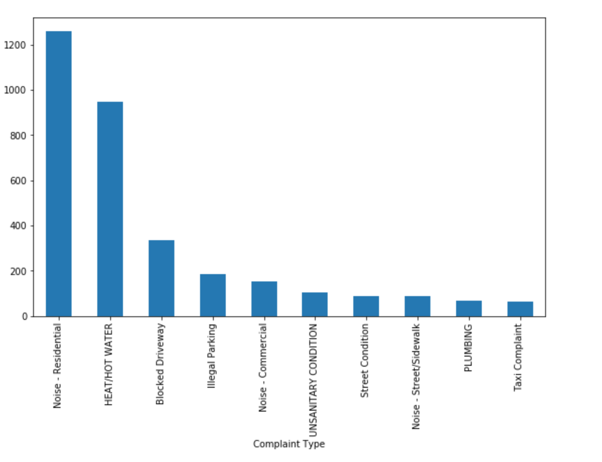
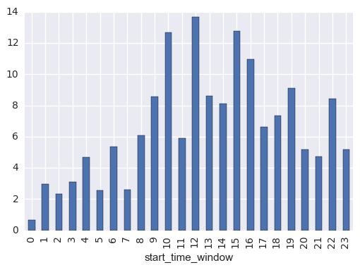
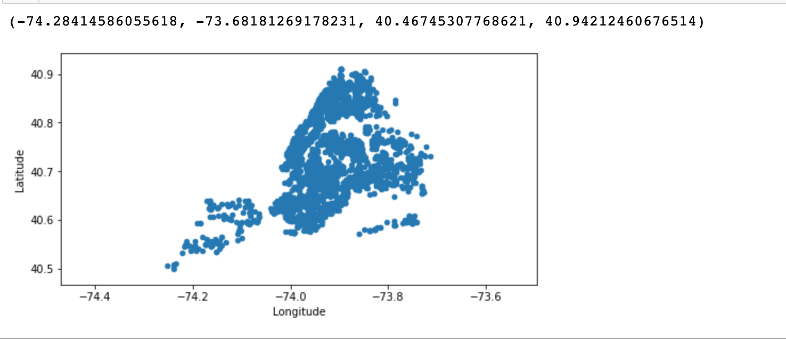
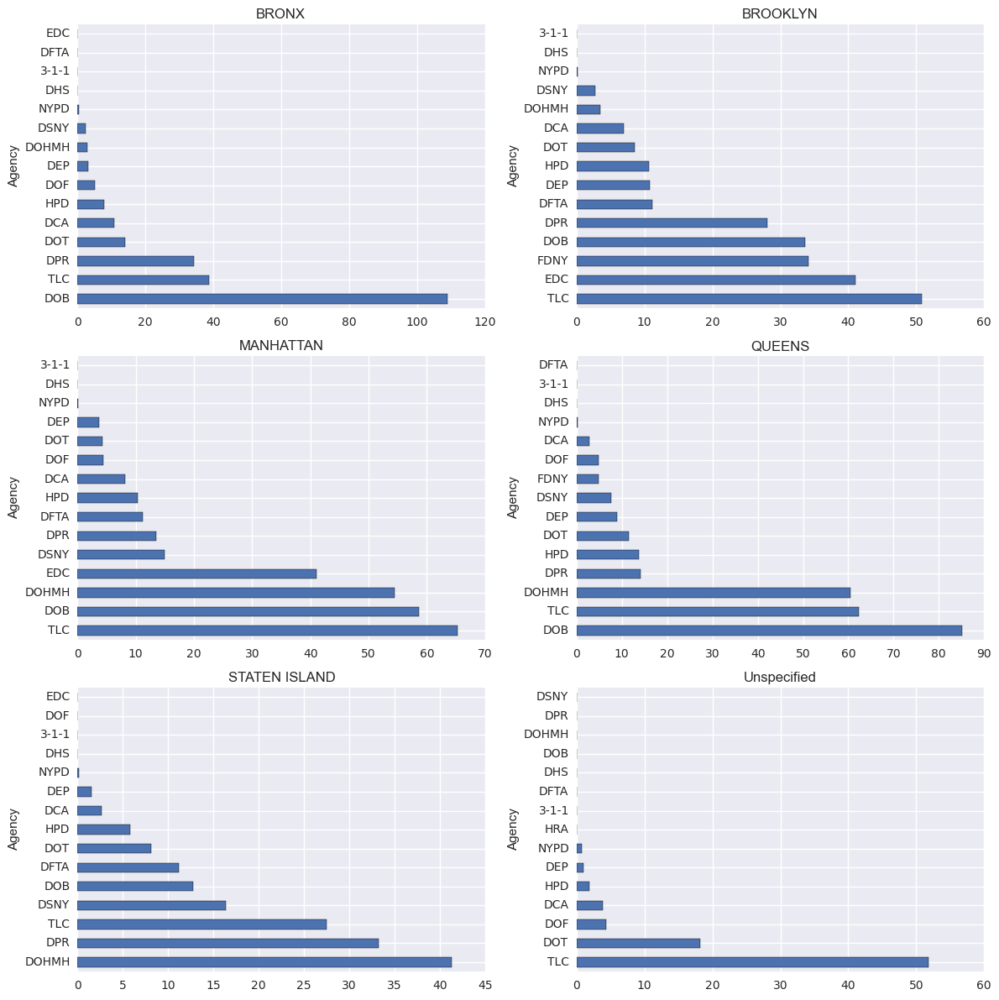
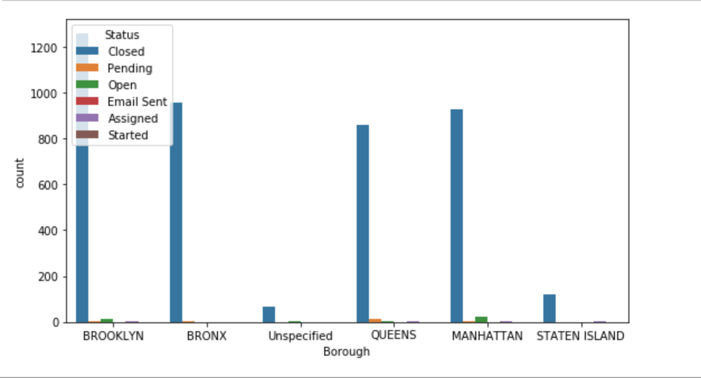
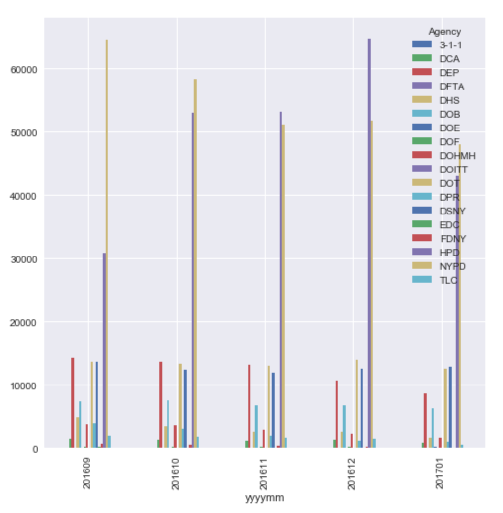

ACADEMIC HONESTY
As usual, the standard honor code and academic honesty policy applies. We will be using automated plagiarism detection software to ensure that only original work is given credit. Submissions isomorphic to (1) those that exist anywhere online, (2) those submitted by your classmates, or (3) those submitted by students in prior semesters, will be detected and considered plagiarism.
INSTRUCTIONS
This assignment test whether you have a basic level of competency in Python. There are two parts of the assignments. The second one is optional and non-graded.
I. Data Preprocessing (100 points)
II. Data analysis and plotting (optional, non-graded). You don't have to submit code for this part in the Vocareum coding platform.
The question can be answered using materials we've covered in class and with the help of the functions listed in the Notes to the question.
I. Data Preprocessing
This homework tests your abilities to manipulate pandas Dataframe and extract the information needed.
1. Read the file 311_data.csv provided to you in the StarterCode section of your workbench and store the data in a
2. Create a
3. Add the column ‘processing_time’ (in days) to this
4. Create a new column - 'start_time_window' - that contains the hour of the day that the incident report was created
5. output a
The first few lines should look like:

Notes:
1. pandas has a function 'to_datetime' which convert string series to datetime series
2. to get the hour of the day, you can use 'apply(lambda x: x.hour)'
Bonus Points:
Submitting this assignment before 12/01/2020, 23:30 UTC is eligible for bonus points (we count grades on your latest submission). Due to edX policy, all assignment grades are capped at 100%.
The assignment's final due date is 12/13/2020, 23:30 UTC.
What To Submit. Before you submit, the RUN button on Vocareum should help you determine whether or not your program executes correctly on the platform. Submit only the .ipynb file.
There are some instructions for you to submit the assignment:
- You only need to write your code in the comment area "Your Code Here".
- Do not upload your own file. Please make the necessary changes in the Jupyter notebook file already present in the server.
- Please note, there are several cells in the Assignment Jupyter notebook that are empty and
read-only . Do not attempt to remove them or edit them. They are used in grading your notebook. Doing so might lead to 0 points.
II. Data analysis and plotting (Optional section, Non-graded)
This part is to check for yourself how to use pandas for plotting data from the
You can use Jupyter notebook or any python IDE on your local machine to write code to output these graphs.
5. Plot a bar graph of the 10 most frequent complaints. Output a png file named 1.png, a correct graph should look like this (figsize=(8.5,.5)) :

6. Group the data by hour of the

7. Using a scatter plot, map all the longitudes and the latitudes on a map. output a png file named 3.png, a correct graph should look like this (figsize=(8,5.5))

8. Group the data by both

9. Group the boroughs by different statuses and output a png file named 5.png, a correct graph should look like this figsize=(8,5.5)):

10. Build a graph of the number of incidents by months. Start by creating a new data field 'yyyymm' using datetime.strftime instance method. Then group by 'agency' and 'yyyymm'.

Notes:
1. use of
2. use of unstack() is necessary for parts 10
What To Submit. You don't need to submit anything for this part.
USE OF VOCAREUM
This assignment uses Vocareum for submission and grading. Vocareum comes equipped with an editing environment that you may use to do your development work. You are NOT required to use the editor. In particular, you are free to choose your favorite editor / IDE to do your development work on. When you are done with your work, you can simply upload your files onto Vocareum for submission and grading.
However, your assignments will be graded on the platform, so you MUST make sure that your code executes without error on the platform. In particular, we do not recommend using any third-party libraries and packages beyond numpy, matplotlib, and scikit-learn. We do not guarantee that they will work on the platform, even if they work on your personal computer. For the purposes of this project, the standard Python library and the aforementioned packages should be more than sufficient.
Pandas Practice (External resource)